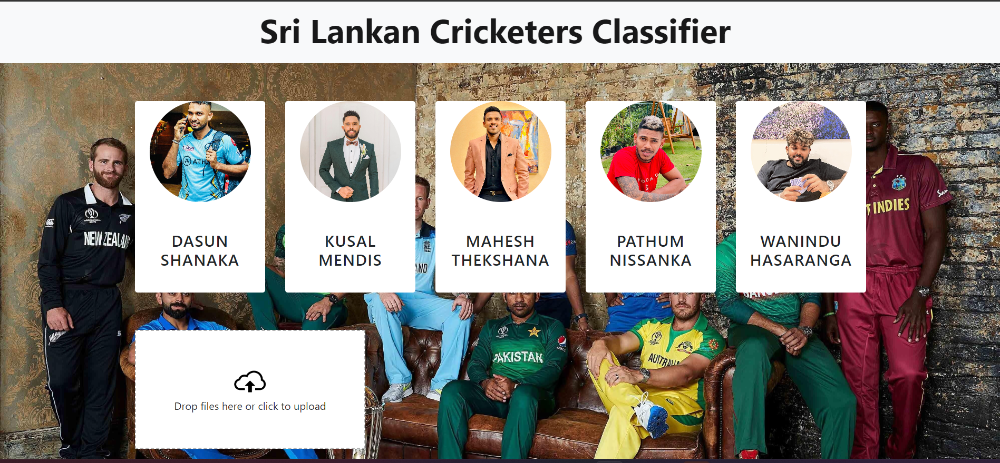
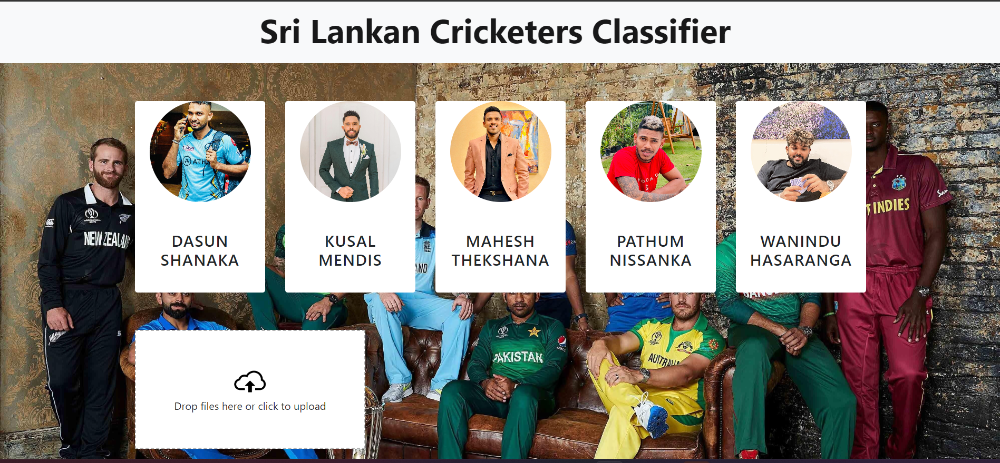
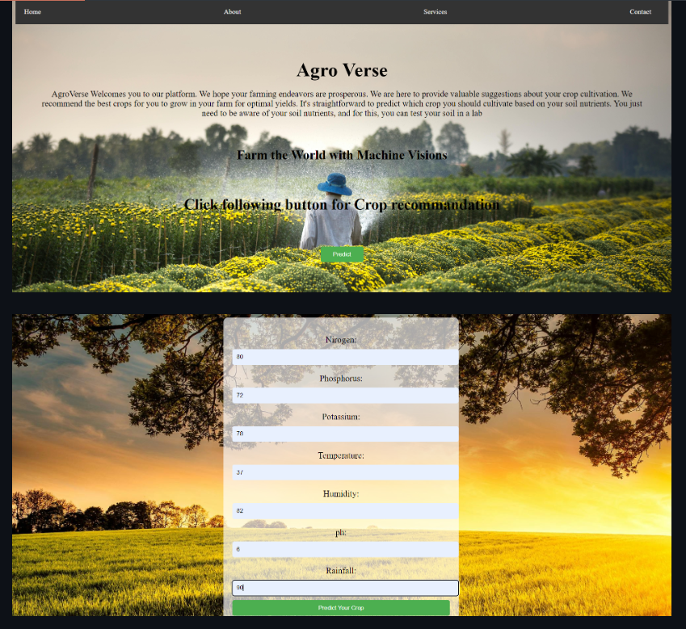
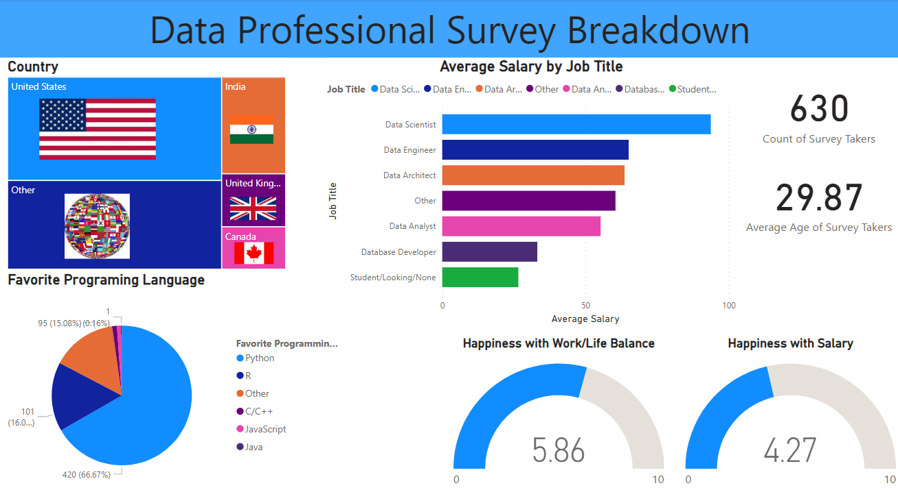

(Currently Working on)
Heritage Decode is a pioneering mobile application project developed by our second-year data science group, in collaboration with the archaeology department, aimed at translating ancient Sri Lankan stone inscriptions.
Located in the historic sites of Anuradhapura, these inscriptions hold significant cultural and historical value. Our methodology involves gathering raw data through the archaeology department,
employing data cropping and semantic segmentation techniques for data preprocessing, and utilizing a database and comparison algorithm for translation. Integrated into a user-friendly mobile application interface, Heritage Decode offers real-time inscription translation capabilities,
bridging the gap between ancient history and modern technology, and promoting cultural preservation and education.
 

This project utilizes machine learning techniques for facial recognition to identify Sri Lankan cricketers. The backend is developed using Python Flask, incorporating a trained model for face detection. The user interface is designed with HTML, CSS, and JavaScript, providing an intuitive web interface for users to interact with the system. Users can upload images of Sri Lankan cricketers, and the system will detect and identify the players present in the images. This repository includes all the necessary files and code for running the project locally

About
This project leverages the power of machine learning, specifically neural networks and logistic regression, to predict the best crops for cultivation based on soil nutrient data. Built with Python, the backend utilizes Flask to serve predictions, while the frontend is crafted using HTML and CSS for an interactive user experience.

About
Explore fundamental machine learning algorithms and feature engineering techniques in this repository. From linear regression to Decision Trees and K-means clustering, dive into practical projects and Jupyter Notebooks for hands-on learning and real-world applications. Elevate your machine learning skills and unlock the potential of data science.

Welcome to the Power BI Starter Kit! Get started with Power BI effortlessly! This repository provides a comprehensive guide and resources for beginners and experienced users alike. Dive into tutorials, explore a dynamic Power BI dashboard, and leverage sample datasets to master data visualization and analytics.
This is like a cheatsheet which include jupyter notebook file with data set for beginners in data science field, who need to improve thier pandas knowledge.
This project give the prediction about medical insurance by using polynomial linear regression. Data loading, cleaning, outlier handling and data visualization also performed here.